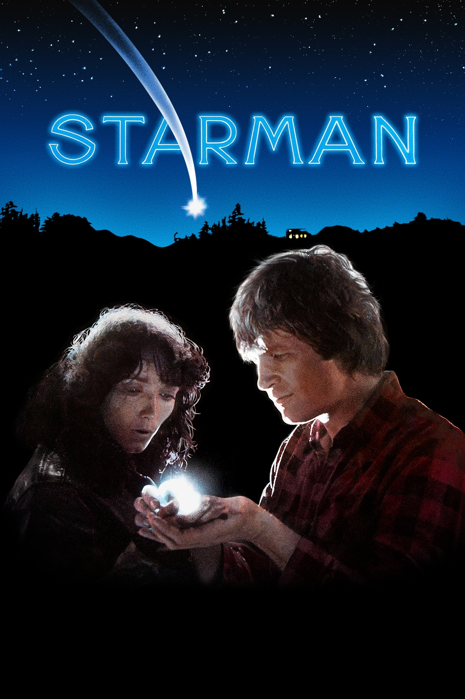

Мировая премьера: 14 декабря 1984
Слоган: Космическая одиссея на самой жестокой из планет.
Сюжет: Когда космический корабль пришельца с далёкой планеты сбивают над Висконсином, он находит убежище в уединённом домике молодой вдовы Дженни Хайден и принимает облик её недавно погибшего мужа. Инопланетянин убеждает потрясённую Дженни отвезти его в Аризону, объяснив, что если корабль не заберёт его в течение трёх дней, он погибнет. За ними по пятам идут правительственные агенты, намеренные схватить пришельца живым или мёртвым. В пути человек со звезды демонстрирует силу вселенской любви, а Дженни заново открывает в себе человеческое чувство страсти.
Режиссёр: Джон Карпентер
В ролях: Карен Аллен, Джефф Бриджес, Чарльз Мартин Смит
| Карен Аллен | Дженни Хайден |
| Джефф Бриджес | Скотт Хайден |
| Чарльз Мартин Смит | Марк Шермин |
| Ричард Джэкел | Директор Джордж Фокс |
Бюджет: $ 22 млн.
Кассовые сборы в США: $ 29 млн.
Кассовые сборы в мире: $ 29 млн.
Продолжительность: 1 ч. 51 мин.
Рейтинг: 7.0